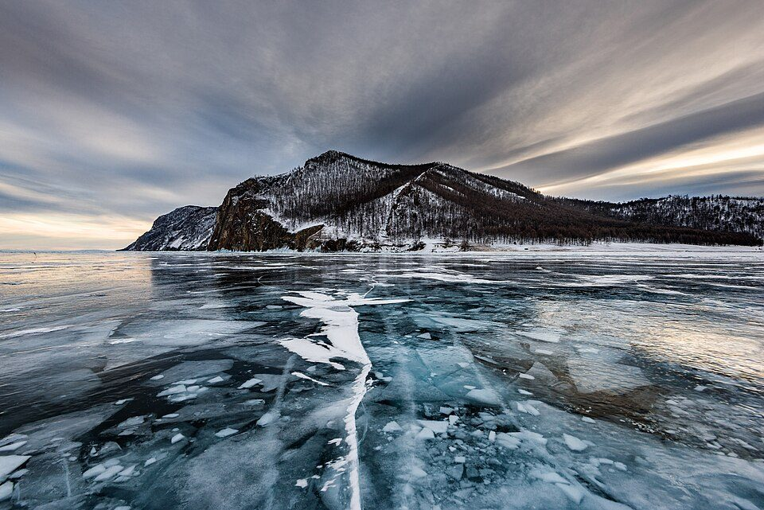

Ríos y lagos
El Nilo y el Amazonas, el Baikal, las grandes cascadas y los ríos de la península: el agua dulce que dibuja los continentes.


Los ríos y lagos guardan menos del 1 % del agua dulce de la Tierra, pero son el agua que vemos, bebemos y usamos para regar. Han modelado valles y deltas y han decidido dónde nacían las civilizaciones: Egipto junto al Nilo, Mesopotamia entre el Tigris y el Éufrates, China junto al río Amarillo.
El duelo de gigantes: Nilo o Amazonas
Durante mucho tiempo se dijo que el Nilo, con unos 6.650 km, era el río más largo del mundo. Pero medir un río es difícil: depende de dónde se sitúe su nacimiento. Algunos estudios dan al Amazonas más de 6.900 km. Lo que nadie discute es que el Amazonas es el más caudaloso: vierte al Atlántico alrededor de una quinta parte de toda el agua que los ríos del mundo llevan al mar, más que los siete siguientes juntos. Su desembocadura mide más de 300 km de ancho y no tiene ni un solo puente en todo su recorrido.
| Río | Longitud aproximada | Desemboca en |
|---|---|---|
| Nilo | 6.650 km | Mediterráneo |
| Amazonas | 6.400 a 7.000 km | Atlántico |
| Yangtsé | 6.300 km | Mar de China Oriental |
| Misisipi-Misuri | 6.275 km | Golfo de México |
| Yeniséi | 5.540 km | Océano Ártico |
Lagos extraordinarios
- El mar Caspio, entre Europa y Asia, es el mayor lago del mundo: más grande que Alemania. Se le llama mar porque su agua es algo salada.
- El lago Baikal, en Siberia, es el más profundo (1.642 m) y el más antiguo (unos 25 millones de años). Guarda alrededor de una quinta parte del agua dulce líquida de la superficie del planeta y alberga focas que no viven en ningún otro lugar.
- El lago Titicaca, entre Perú y Bolivia, a 3.812 metros, es el gran lago navegable más alto del mundo.


Cascadas
El salto Ángel, en Venezuela, es la cascada más alta del mundo: el agua cae 979 metros, tanto que buena parte se evapora antes de llegar abajo. Las cataratas del Iguazú, entre Argentina y Brasil, forman un frente de casi 3 km con unos 275 saltos. Al verlas, la primera dama de Estados Unidos Eleanor Roosevelt exclamó: «¡Pobre Niágara!».
Los ríos de la península
| Río | Longitud | Curiosidad |
|---|---|---|
| Tajo | 1.007 km | El más largo de la península; desemboca en Lisboa |
| Ebro | 930 km | El más caudaloso de España; forma el delta del Ebro |
| Duero | 897 km | Atraviesa la meseta y entra en Portugal por los Arribes |
| Guadiana | 744 km | Parece desaparecer bajo tierra y volver a surgir en los Ojos del Guadiana |
| Guadalquivir | 657 km | El único gran río navegable de España, hasta Sevilla |
El lago de Sanabria (Zamora) es el mayor lago de origen glaciar de la península, y la Albufera de Valencia, una gran laguna costera junto al mar.
Vídeos para entenderlo mejor
- 🗺️ Los RÍOS de ESPAÑA y sus VERTIENTES | Vídeos Educativos para Niños de PRIMARIA | @HappyLearningESHappy Learning Español · 17 mil visualizaciones
Los vídeos son de YouTube y de sus autores. Se cargan solo al pulsar sobre ellos. Ver todos los vídeos →